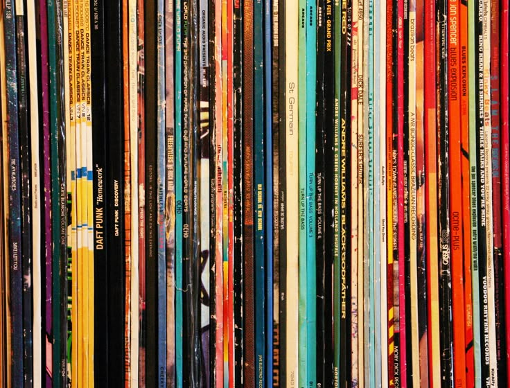

Bateas de Vinilos y CDs
Explorá las bateas con una gran variedad de discos nuevos y usados de una gran variedad de géneros: rock y pop nacional e internacional, jazz, funk, soul, compilados, bandas sonoras y mucho más.

Llevate muchos más vinilos a tu colección con descuentos y disfrutá de una tarde ambientada con música en vivo para descubrir joyas ocultas.
Explorá las bateas con una gran variedad de discos nuevos y usados de una gran variedad de géneros: rock y pop nacional e internacional, jazz, funk, soul, compilados, bandas sonoras y mucho más.

¿Quieres hacer crecer tu colección?, para eso preparamos ofertas para que te lleves más música por menos.
Un espacio de hallazgo para que descubras nueva y buena música de nuestro catalogo de artistas independientes.
Conocé el trabajo de ilustradores independientes y artistas gráficos. Podrás comprar láminas seriadas, posters y merchandising oficial de tus bandas preferidas.
Disfrutá de presentaciones en vivo de artistas emergentes que ambientarán la feria durante toda la jornada.